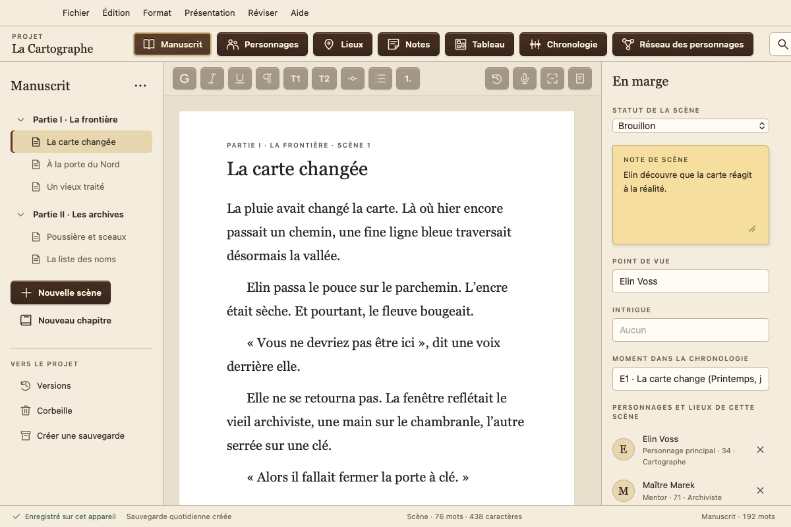
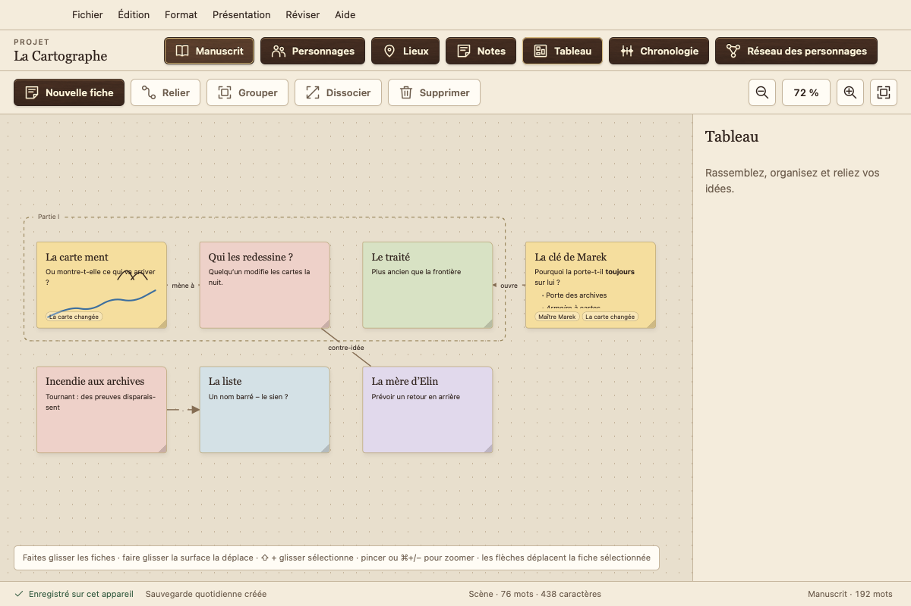
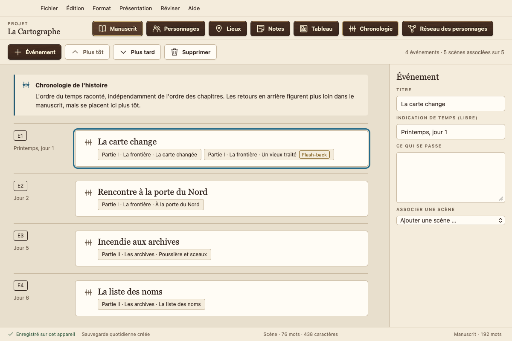
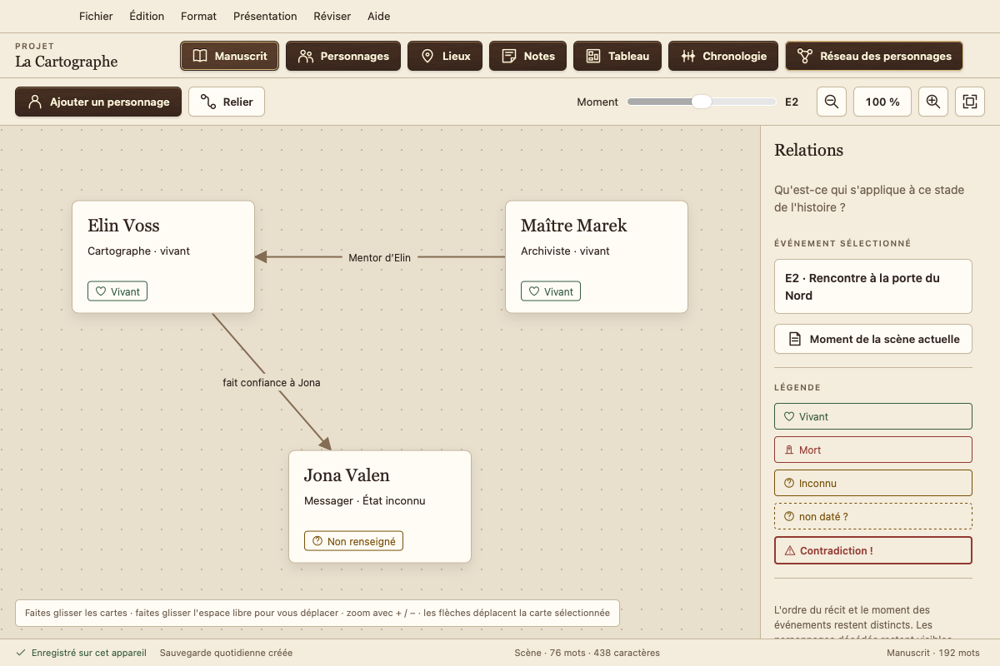
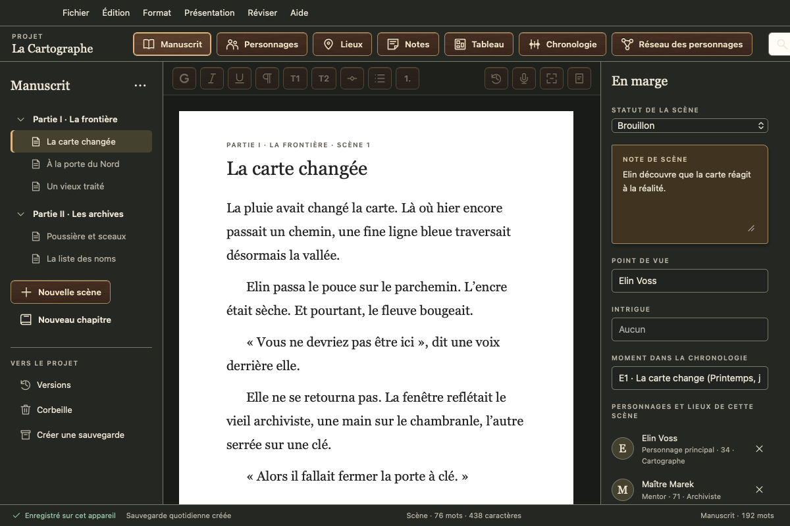

Le logiciel d’écriture gratuit pour romanciers
Votre manuscrit reste chez vous : sans abonnement, sans compte, sans collecte de données, sans entraînement d’IA. Pour Mac, Windows, Linux et Android.
Version 0.1.4 · phase de test · 6 langues

Tout votre livre au même endroit
Chapitres et scènes
Écrivez scène par scène, réorganisez-les par glisser-déposer et gardez une vue d’ensemble grâce au statut, au point de vue et aux notes de scène.
Personnages et lieux
Des fiches de personnages avec vos propres champs. Atramentum repère qui apparaît dans chaque scène.
Tableau
Des fiches avec du texte, des listes et des croquis, regroupées et reliées entre elles, associées à vos scènes et à vos personnages.
Chronologie
Les événements dans le temps de l’histoire. Atramentum détecte les flash-backs lorsque l’ordre de votre livre s’écarte de la chronologie.
Réseau des personnages
Les relations et les états de vos personnages à n’importe quel moment du récit. Qui est encore en vie au chapitre 12 ?
Page normalisée, Word et livre numérique
Export PDF en page normalisée ou en exemplaire de lecture, vers Word, en livre numérique (EPUB, également pour Kindle via KDP), en Markdown ou en texte brut. Import depuis Word, Scrivener, Markdown et texte brut.
Réviser
Analyse du style : lisibilité, phrases longues, répétitions et mots de remplissage. Vérification de l’orthographe et de la grammaire de tout le manuscrit avec le correcteur de votre système.
Atramentum en images




Vos mots vous appartiennent
Local et hors ligne
Atramentum enregistre tout sur votre appareil et fonctionne sans Internet. Il n’envoie jamais vos textes ni vos données personnelles où que ce soit.
Rien ne se perd
Chaque modification est enregistrée immédiatement. Vous disposez en outre de versions pour chaque scène, d’une corbeille, de sauvegardes quotidiennes et d’un outil de secours.
Sur tous vos appareils
Synchronisation via un dossier de votre propre service cloud (iCloud Drive, Dropbox, OneDrive …), sans aucun compte chez nous.
Téléchargement
| Système | Téléchargement | Guide |
|---|---|---|
| Mac macOS 13+, Apple silicon et Intel | .dmg | Installer sur Mac |
| Windows 10 et 11, 64 bits | Programme d’installation (.exe) | Installer sur Windows |
| Linux Ubuntu, Debian, Mint | .deb | Installer sur Linux |
| Linux toutes les autres | AppImage | Installer sur Linux |
| Android 7 et versions ultérieures, téléphone et tablette | .apk | Installer sur Android |
Atramentum n’est ni notarisé par Apple ni signé avec un certificat Microsoft. Ces certificats coûtent de l’argent chaque année, et Atramentum est gratuit. C’est pourquoi macOS et Windows demandent une confirmation avant le premier lancement ; les guides expliquent comment l’ouvrir malgré tout. L’iPhone et l’iPad suivront via l’App Store.
Phase de test : faites des sauvegardes régulières et signalez-moi tout ce que vous remarquez. Les sommes de contrôle et les outils de secours se trouvent sur la page de la version.